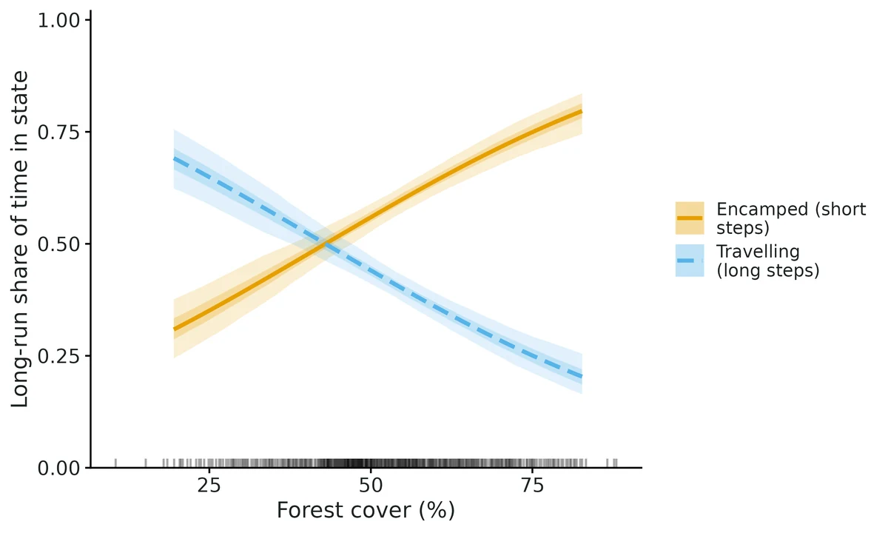
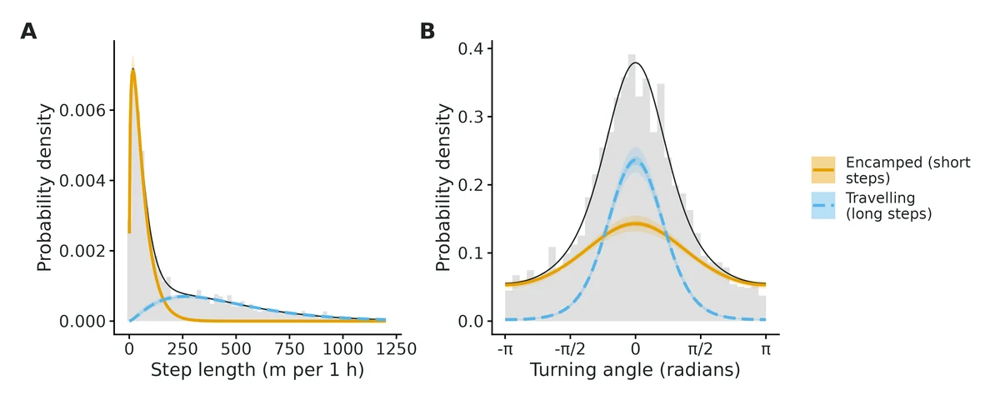
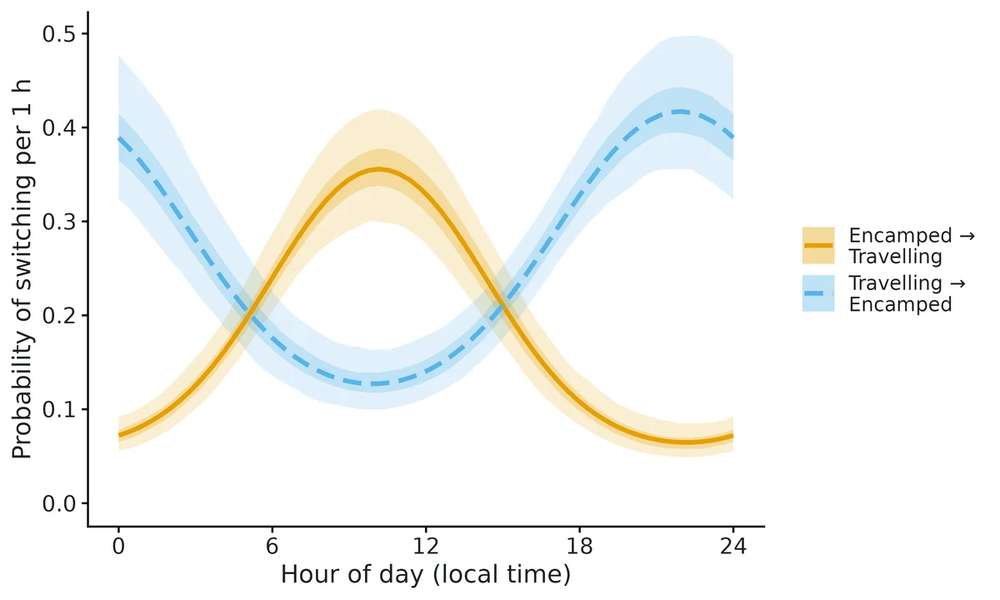
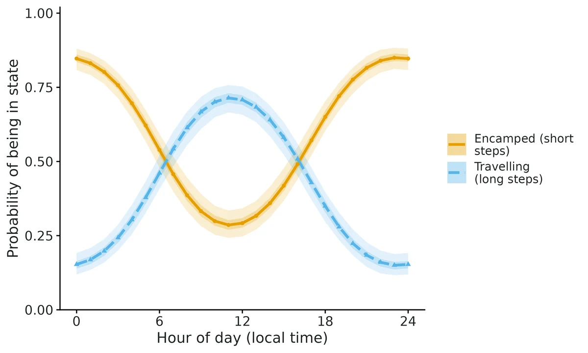

Hidden Markov models for animal movement (behavioural states)
"When is my animal resting/foraging and when is it travelling, how much time does it spend in each mode, and is switching between modes associated with time of day and habitat?"
Is this the right analysis?
Use it when
GPS / Argos-quality-filtered telemetry with fixes at a (roughly) regular interval, and the question is which movement modes an animal switches between (e.g. encamped/foraging vs travelling), how much time it spends in each (activity budget), and how time of day or habitat at its location is associated with switching between modes.
Not for
Habitat selection / resource selection (use movement-ssf); home-range size (movement-ssf home ranges / ctmm); fixes so irregular or error-prone that a regular grid is meaningless (fit a continuous-time model first, e.g. crawl multiple imputation); accelerometer or dive data (possible with momentuHMM but not built in here); individual random effects on state switching; hidden semi-Markov (non-geometric dwell times).
The data you need
One CSV with one row per fix - animal id, timestamp, coordinates (lon/lat or projected x/y in metres) - plus optional covariate columns measured at each fix (e.g. % forest cover, distance to road).
What the example's main data file looks like:
| animal_id | timestamp | longitude | latitude | forest_cover_pct |
|---|---|---|---|---|
| elk_F01 | 2024-06-01 12:00:33 | -123.267139 | 44.53311 | 51.4 |
| elk_F01 | 2024-06-01 12:58:34 | -123.268262 | 44.536019 | 52.5 |
| elk_F01 | 2024-06-01 13:59:49 | -123.271727 | 44.543074 | 45.8 |
| elk_F01 | 2024-06-01 14:59:24 | -123.271775 | 44.542839 | 46.2 |
| elk_F01 | 2024-06-01 15:58:32 | -123.271697 | 44.542961 | 46 |
Not sure? Use the finder to compare modules.
The worked example
Behavioural states of GPS-collared elk with a hidden Markov model (simulated example)
The question: Do collared elk switch between an encamped (short-step) and a travelling (long-step) movement mode, how much time do they spend in each, and is switching associated with time of day and forest cover?
The data are simulated, so the true answer is known and the analysis can be checked against it.
What the researcher typed
Here is a CSV of hourly GPS fixes from 5 elk (elk_gps.csv, times are Pacific time). I want to know whether they switch between resting and travelling, how much time they spend in each, and whether time of day and forest cover affect switching. Please analyse it and give me a report with figures I can use in a paper.
Run it yourself
Download the example data below and unzip it.
Open the unzipped folder in Claude Code (see Install).
Paste the prompt above. The agent checks the files, writes a plan, runs planted truth, fits the model and writes the report. You can compare your results with the ones below.
Contains elk_gps.csv, the settings file (config.yaml), a description of the data and a step-by-step walkthrough.
Study design details
| n animals | 5 |
|---|---|
| n fixes per animal | 720 |
| fix interval h | 1 |
| fixes in file | 3416 |
| regular time steps | 3600 |
| missing steps | 184 |
| missing prop | 0.05 |
| jitter min | 2 |
| landscape km | 20 |
| nstates | 2 |
| covariates | forest_cover_pct, time_of_day |
| time zone | America/Los_Angeles |
| seed | 2024 |
Results from the example data

In plain language
- Encamped (short steps): mean step 60 m per 1 h (95% CI 57-63 m), turning concentration 0.50 (0.43-0.57), i.e. little directional persistence (frequent sharp turns and reversals).
- Travelling (long steps): mean step 454 m per 1 h (95% CI 434-473 m), turning concentration 2.32 (2.17-2.49), i.e. moderate directional persistence.
- Activity budget (expected long-run share of time in each state, averaged over the 24-h cycle, at the average value of the habitat covariates): Encamped (short steps) 58% (95% CI 55-61%); Travelling (long steps) 42% (95% CI 39-45%).
- Time of day: the probability that an animal is in Travelling (long steps) is highest around 11:00 at 71% (95% CI 67-76%) and lowest around 23:00 at 15% (12-19%), with habitat at its mean.
- Each 1-SD increase in forest_cover_pct (14.9 units) multiplies the odds of switching from Encamped to Travelling (versus staying) per time step by 0.67 (95% CI 0.58-0.79); switching back from Travelling to Encamped changes by a factor 1.48 (1.26-1.76) per SD.
- The model-predicted long-run share of time in Encamped (short steps) would be 41% (95% CI 36-47%) if forest_cover_pct were held at 32.5 (10th percentile of the fixes) and 73% (69-77%) if it were held at 72.8 (90th percentile). This is an association with the covariate measured at the animal's location, not proof that forest_cover_pct causes the behaviour.
- States are statistical summaries of movement; labels such as 'resting/foraging' or 'travelling' are interpretations that should be checked against independent observations.
More figures



Figures are the module's default publication figures, reduced for the web. The report also saves them as PDF and full-resolution PNG.
Planted truth at the example's design
Before trusting the example's results, the module was run on many simulated data sets with the same design and known true values. Each row is one quantity: did the method get it back? (What the thresholds are.)
15/16 estimands pass planted-truth recovery at this design; tpm_2to1_tod_sin coverage 0.890 < bound 0.904 (bias -4.3%, within tolerance). Convergence and GOF pass. Conclusions on states, activity budget and forest association are supported; time-of-day intervals may be slightly narrow (VALIDATION.md Known limit 3).
15 of 16 rows pass.
Show the full recovery table (16 rows)
| Quantity | True value | Average estimate | Bias | Coverage | Result |
|---|---|---|---|---|---|
| activity_budget_state1 | 0.592 | 0.593 | +0.2% | 0.94 | ✓ PASS |
| activity_budget_state2 | 0.408 | 0.407 | -0.2% | 0.94 | ✓ PASS |
| step_mean_m_state1 | 60 | 60.1 | +0.2% | 0.92 | ✓ PASS |
| step_mean_m_state2 | 450 | 450.9 | +0.2% | 0.94 | ✓ PASS |
| step_sd_m_state1 | 50 | 50 | -0.0% | 0.95 | ✓ PASS |
| step_sd_m_state2 | 300 | 299.7 | -0.1% | 0.96 | ✓ PASS |
| tpm_1to2_forest | -0.025 | -0.026 | -4.1% | 0.93 | ✓ PASS |
| tpm_1to2_intercept | -1.68 | -1.69 | -0.2% | 0.96 | ✓ PASS |
| tpm_1to2_tod_cos | -0.9 | -0.895 | +0.6% | 0.95 | ✓ PASS |
| tpm_1to2_tod_sin | 0.4 | 0.402 | +0.5% | 0.92 | ✓ PASS |
| tpm_2to1_forest | 0.025 | 0.0251 | +0.5% | 0.96 | ✓ PASS |
| tpm_2to1_intercept | -1.12 | -1.11 | +0.5% | 0.95 | ✓ PASS |
| tpm_2to1_tod_cos | 0.7 | 0.709 | +1.2% | 0.95 | ✓ PASS |
| tpm_2to1_tod_sin | -0.3 | -0.313 | -4.3% | 0.89 | ✗ FAIL |
| turn_concentration_state1 | 0.5 | 0.497 | -0.7% | 0.94 | ✓ PASS |
| turn_concentration_state2 | 2.5 | 2.51 | +0.2% | 0.92 | ✓ PASS |
Limits that matter
- Number of states is the analyst's choice; too few states merge behaviours and bias every parameter (VALIDATION.md Known limit 1).
- Transition-coefficient intervals are slightly narrow: null false-positive rate 0.07-0.08 vs 0.05; at this design tpm_2to1_tod_sin covered 0.890 (Known limit 3).
- Missed fixes (5.1%) are treated as missing at random; habitat- or behaviour-dependent fix failure can bias the encamped share and forest association.
- All animals share one set of parameters (no individual random effects, no semi-Markov dwell times) (Known limit 6).
- Habitat effects on switching are associations with conditions at the fix, not causal effects (Known limit 9).
- State labels (encamped/travelling) are interpretations of step length and turning, not observed behaviours.
All known limits from the module's validation record
- Number of states. A model with too few states converges cleanly but merges behaviours and biases everything (section 5). The module does not choose N for you; AIC tends to over-select states in real data (Pohle et al. 2017). Compare 2 vs 3 states with pseudo-residuals and biology.
- Rare transitions in 3-state models can sit on a boundary (4% of replicates); their coefficients and the 3->1 time-of-day effect failed coverage narrowly (0.879). Interpret 3-state models through activity budgets / stationary probabilities.
- Transition-coefficient intervals are slightly narrow: false-positive rate 0.07-0.08 at nominal 0.05 (0.069 pooled over 1596 null tests in four null studies, section 11); coverage of covariate slopes 0.92-0.98; one time-of-day coefficient at 0.889 with 2-h fixes (section 10).
- Short tracks (~450 steps in total): time-of-day coefficients biased up to +17%; forest power ~0.37; 4% of fits have a singular Hessian. Weakly separated states: forest power ~0.43 and borderline coverage for the longer-step state's mean.
- Only gamma step lengths (with an automatic zero-mass when zero steps occur) and von Mises turning angles with mean 0 are built in. The zero-mass branch passed one recovery study (independent simulator, 6% / 1% zero steps; section 10).
- Pooled parameters across animals: no individual random effects; no hidden semi-Markov dwell times.
regularise: crawluses a single best crawl prediction, ignoring location uncertainty (no multiple imputation). On a strongly irregular test set it shortened steps by 10-18% and doubled turning concentrations (section 9); the angle pseudo-residual test flags it. Treat it as a last resort; for irregular data useMIfitHMMoutside the module. Fix interval is estimated as the most common gap between fixes and snapped to a standard schedule; setdata: interval_hif the collar schedule is unusual.- momentuHMM's reported log-likelihood is offset by ~0.1-0.8 units relative to moveHMM because it applies Gamma(1) to the initial distribution (delta is the distribution one step before the first fix; sections 6 and 10). Harmless for estimation, but never mix engines in AIC tables.
- Habitat effects on switching are associations with conditions at the fix, not causal effects.
Engine, references and full details
Engine: momentuHMM (maximum likelihood via nlm, multiple random starts); moveHMM and a hand-written forward-algorithm likelihood used for cross-checks.
References
- Langrock R, King R, Matthiopoulos J, Thomas L, Fortin D, Morales JM (2012) Flexible and practical modeling of animal telemetry data: hidden Markov models and extensions. Ecology 93(11):2336-2342. doi:10.1890/11-2241.1
- McClintock BT, Michelot T (2018) momentuHMM: R package for generalized hidden Markov models of animal movement. Methods in Ecology and Evolution 9(6):1518-1530. doi:10.1111/2041-210X.12995
- Michelot T, Langrock R, Patterson TA (2016) moveHMM: an R package for the statistical modelling of animal movement data using hidden Markov models. Methods in Ecology and Evolution 7(11):1308-1315. doi:10.1111/2041-210X.12578
- McClintock BT, Langrock R, Gimenez O, Cam E, Borchers DL, Glennie R, Patterson TA (2020) Uncovering ecological state dynamics with hidden Markov models. Ecology Letters 23(12):1878-1903. doi:10.1111/ele.13610
- Pohle J, Langrock R, van Beest FM, Schmidt NM (2017) Selecting the number of states in hidden Markov models: pragmatic solutions illustrated using animal movement. Journal of Agricultural, Biological and Environmental Statistics 22(3):270-293. doi:10.1007/s13253-017-0283-8
- Johnson DS, London JM, Lea MA, Durban JW (2008) Continuous-time correlated random walk model for animal telemetry data. Ecology 89(5):1208-1215. doi:10.1890/07-1032.1
- Koslik J-O, Feldmann CC, Mews S, Michels R, Langrock R (2025) Inference on the state process of periodically inhomogeneous hidden Markov models for animal behavior. Annals of Applied Statistics 19(4):2724-2737. arXiv:2312.14583
- Zucchini W, MacDonald IL, Langrock R (2016) Hidden Markov Models for Time Series: An Introduction Using R, 2nd edn. Chapman & Hall/CRC.